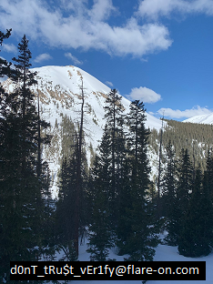

Challenge 6: "bmphide"
Tyler Dean hiked up Mt. Elbert (Colorado's tallest mountain) at 2am to capture this picture at the perfect time. Never skip leg day. We found this picture and executable on a thumb drive he left at the trail head. Can he be trusted?
This challenge gives you a .NET executable(bmphide.exe) and a bitmap image(image.bmp). If you attempt to run the program, you get an error. This isn't because we need a dependency though. The Main function of the program takes 2 parameters, which were not given.
The first parameter is immediately loaded into a bitmap object, so this would have to be a picture. The second would have to be a file filled with data but its unclear what it is used for so far. The third is only used as an output file, so this is our output parameter.
The code is not obfuscated or protected except for the generic [a-j] function names. The variable names remain intact which makes it data flow easy to follow.
Function h receives the data from our second command line parameter and is filled with calls to other functions (a,c,e,f). all of which perform some form of bitwise operation then return the encoded data.
Function i appears to receive the return data from function h, perform a few bitwise operations on it, and save it into the bitmap picture which was passed in. So its obvious that this is a stegonography challenge and that we need to reverse the stego.
But there are tricks in this code! 2 anti-analysis tricks that will change how the data is encoded before it is saved into the bitmap. One of these tricks will cause a StackOverflow exception to be raised if you run the code in dnspy as well.
They require some digging, but both of them are in the "A" class, and the first is found at the bottom of A.IdentifyLocals(). In short, the code saves the location of the Just-In-Time(JIT) compiler for the process into a class variable, and replaces the existing pointer to the JIT compiler with the location of a defined one which is A.IncrementMaxStack(). This is a hook of the JIT compiler.
hooking the JIT compiler
The code which executes in A.IncrementMaxStack() is searching for 2 methods by the metadata tokens 100663317(0x6000015) and 100663316(0x6000014), then replacing two bytes from within that code. The VirtualProtect calls are necessary because the memory page that contains the code does not have write permissions, so that must be changed.
The two functions which match these tokens are "g" and "h". We just need to patch these functions as the JIT hook would, then we'll get to view the code as it would run. To patch the functions, you just need to go to the function and click the hex editor view, then count the number of bytes in the function that the hook will change, and change that. It took me a few tries, but dnspy will typically fail to decompile the code if you get it wrong, so its obvious when you get it right.
Unpatched h and patched h beside eachother
Unpatched g and patched g beside eachother
Now with that code patched, we can remove the call to A.IdentifyLocals() withing A.CalculateStack(), and that will allow us to debug the program finally :)
The hook to the JIT compiler is not the only devious trick though. When debugging, you may notice the the code in "h" does not jump into "a" and "c" functions when we would expect them to. They actually jump into "b" and "d" respectively. This is a result of the two calls to A.VerifySignature() at the bottom of the Init() function. A.VerifySignature() effectively
A.VerifySignature() calls
You could patch the code for increased readability, but its not totally necessary since we only need to remember that "b" and "d" are called instead of "a" and "c".
It would take a very long time for me to go through each function that is called to explain how the data is encoded and saved within the pixels so i'm not going to do that in this write-up. Instead i've made my decoder available
here. It includes simplified re-implementations of many of the relevant functions and reversed logic for the relevant functions. There is also some logic for irrelevant functions because i made many mistakes on this challenge. :)
Running the
decoder first gives us another picture, then running it again gives us the last picture with the flag embedded at the bottom.

The flag!
Answer: d0nT_tRu$t_vEr1fy@flare-on.com